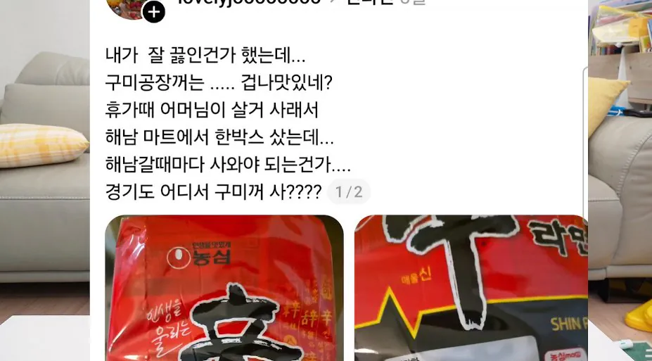
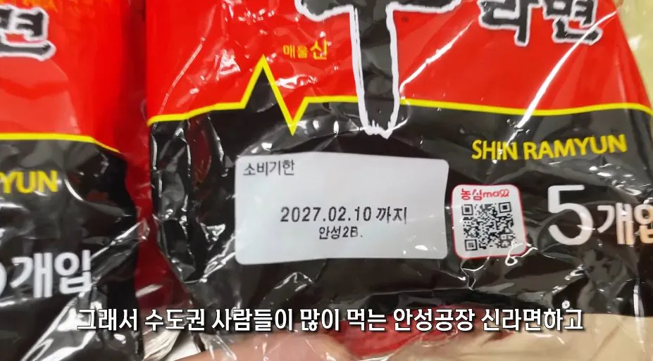
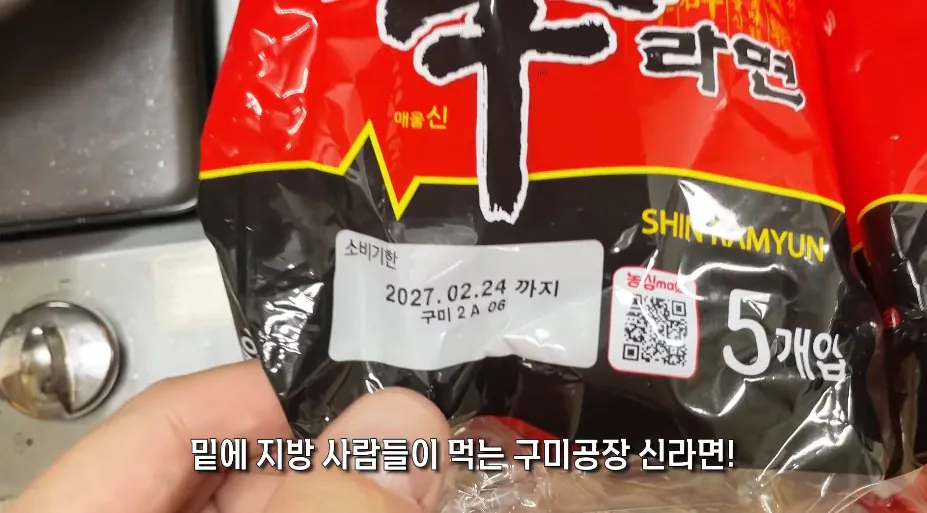
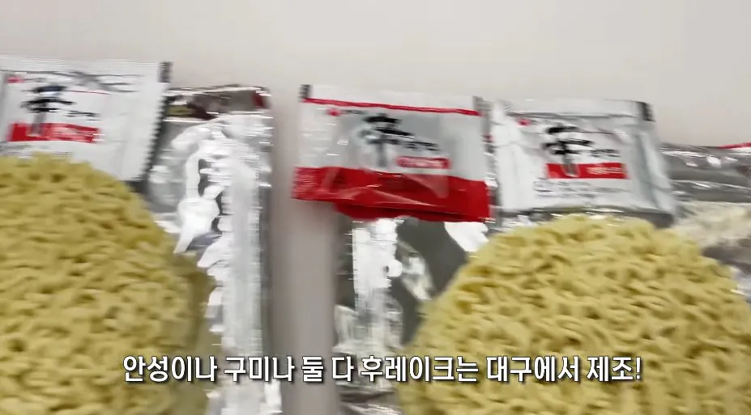
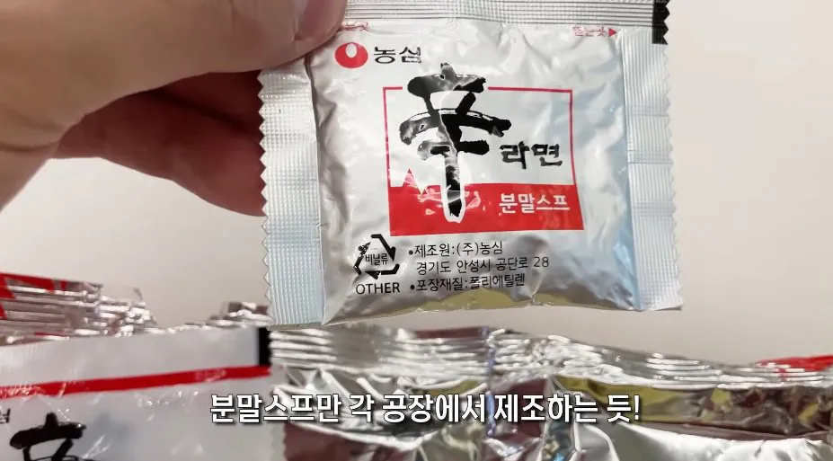
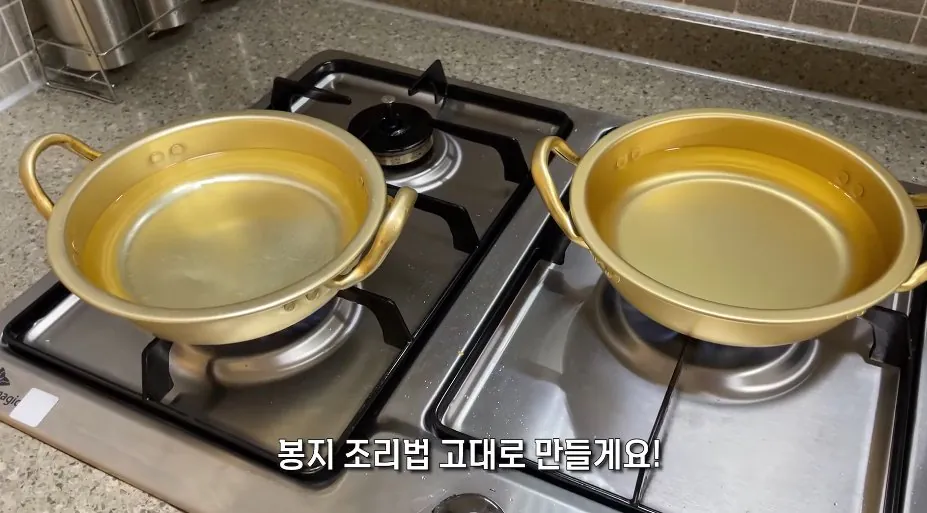

요약
-생면 냄새부터 다름
-구미 국물이 더 기름지고 감칠맛이 더 강함
-면도 구미께 살짝 더 쫄깃한 느낌
-애매하게 다른게 아니라 확 다름
-간이 센 걸 선호하는 유튜버 취향상 구미공장 제품이 더 맛있다고 함






요약
-생면 냄새부터 다름
-구미 국물이 더 기름지고 감칠맛이 더 강함
-면도 구미께 살짝 더 쫄깃한 느낌
-애매하게 다른게 아니라 확 다름
-간이 센 걸 선호하는 유튜버 취향상 구미공장 제품이 더 맛있다고 함
그치 디자이너나 연주자나 그런.. 어?
농심도 대기업아니냐?
QC가 왜저럼
콜라도 해태공장 외주 콜라가 맛없음
어쩐지 신라면 ㅈㄴ 맵기만하고 맛없더라
군생활하면서 맛있게 먹고 배도 아픈 적이 없었는데
군생활을 언제 했는진 모르겠지만 신라면 매워진 건 맞음
군생활을 언제 했는진 모르겠지만 먹고 아픈거면 나이가 들어서 건강을 챙겨야 함
몇세십니까 할배같으신데
신라면이 근 10년동안 존나 매워진걸로 알고있음
거의 2배 이상 매워짐
김용의 사조영웅전에 홍칠공이 같은 음식이라도 장소에 따라서 맛이 달라진다고 해서 황궁에 잠입해 요리해 먹는 장면이 나옴. 그런 원리인가...
저긴 같은장손데?
생각해보면 qc합격 기준은 통과한다고 해도 기계공산품 로트 별로 차이가 분명히 발생함. 사람 먹는 음식이 완전 똑같을 수는 없긴 할듯.... 뭐가 더 맛있냐는 떠나서
???:고추가룻 묵은내나유~~~ 고기에서 냄새나유~
방금 윤호찌 봤는데 개드립 올라오내 ㅋㅋ
윤호찌는 유명유튜버임
이런건 블라인드테스트를 해야 의미가 더 확실할탠데 ㅋㅋ
카스맥주도 그럼
청원공장에서 나오는 카스와 이천,광주공장에서 나오는 카스 탄산감 자체가 다름
먹어보면 청원공장 카스가 맛있음
이런거보면 앞으로 맛잘알 동네는 경상도라 불러야할듯
청원은 충북임..
아 창원으로봤음
바보개붕이
오리엔탈 때부터 이천이 짱이었슴
국물색부터다르네
거의 모든식품이저럼. 특히 국내생산공장 위치 많이표기된 회사일수록.
클룹 소다는 공장에따라서 상표만가진 완전 다른음료라봐도 무방
코카콜라도 업소 납품용이 훨씬 맛있다며
코카콜라 펩시콜라쪽은 별 차이 없을걸
콜라같은 경우는 생산하는 기업을 보틀링업체라고해서 원액을 코카콜라랑 펩시 각국 자회사 통해서 판매함
희석농도가 차이나면 맛이 차이날 순 있는데 보통 그런것도 다 계약에 들어가있는거라 굳이 리스크 지면서까지 농도 바꿀이유도 없고
필라이트 맥주도 F1 F3이 있는데 제조 지역이 다름. F1 강원도 홍천이 진짜 깔끔하게 맛있고 F3 전북 완주는 약간 특유의 향? 같은 게 나는데 이게 별로임.
맛이 다르고 이상해서 회사 문의 넣었더니 지사 매니저가 와서 맥주 회수해가고 테스트랑 검사까지 했는데 둘이 차이 없다고 성분검사지와 함께 고객님이 좀 예민하신듯ㅎㅎ 하고 보내더라.
근데 친구 여섯명 데려다놓고 블라인드테스트했는데 다 F1이 훨 낫다고 말함
이후로는 필라이트는 뒤집어서 F1인지 확인하고 사먹음
안성공장은 안성탕면 영향으로 순한건가ㅋㅋ
물도 맛이다르고 공기도 맛이 다다르고 같은거 하나없쑤
그냥 라면 끓일때 식용유 한숫갈 소금 조금 넣어 그럼 확실히 진해짐
라세권 ㄷㄷ
눈으로만 봐도 저렇게 국물 농도가 저렇게 차이가 나네.
구미 라면축제에 오면 구미공장에서 갓만든 라면을 살 수 있습니다
평가도 좋음
재밌더라 그거
공장이 다르니까 라인구조가 다른건가
수도권인데 방금 사러갔다왔더니 구미공장이던데
1황 신라면
구미라면 구미가 당기네
어쩐지 어떤날은 존나 맛없어져서 “내 입맛이 바뀐건가? 신라면이 너프 된건가?” 했다가 또 나중에 사먹어보면 존나 맛있어졌네 하던 이유가 그런거였구나
시발 이런게 있었어?
경상도가 고향인데 신라면만 먹었었거든
근데 서울올라오고 맛없어서 안먹고있는데 ㅅㅂ 몰랐네
어쩐지 다른 지역 발령 갔을때 부터 신라면 안먹게됨.
국물 색부터가 다르네
장수막걸리도 생산 위치에 따라 다르던데 어르신들은 어디어디가 맛있는지 아는 분들 계시더라
시발이게왜진짜임
이제 구미도 안성 생산품 기준으로 맞춰질듯
수도권에도 라면 공장 지어라
라면축제 하는 이유 ㄷㄷ
안성이라고 안성탕면을 끼리왔나벼!!
그림.. 음악...